{% capture intro-text %}{% include headline.md %}{% endcapture %}
{% capture mission %}{% include mission.md %}{% endcapture %}
{% capture mission-left %}{% include mission-left.md %}{% endcapture %}
{% capture mission-right %}{% include mission-right.md %}{% endcapture %}
{% capture about %}{% include about.md %}{% endcapture %}
{% capture about-left %}{% include about-left.md %}{% endcapture %}
{% capture about-right %}{% include about-right.md %}{% endcapture %}
{% capture whatwedo %}{% include whatwedo.md %}{% endcapture %}
{% capture whatwedo-1 %}{% include whatwedo-1.md %}{% endcapture %}
{% capture whatwedo-2 %}{% include whatwedo-2.md %}{% endcapture %}
{% capture whatwedo-3 %}{% include whatwedo-3.md %}{% endcapture %}


    <!-- Header -->
    <header>
	    <script type="text/javascript">
document.getElementById('class').add('index');
document.getElementById('class').remove('blog');
</script>
        <div class="container">
            <div class="intro-text">
		{{ intro-text | markdownify }}
            </div>
        </div>
    </header>
	
    <!-- Clients Section -->
    <section id="whatwedo">
        <div class="container">
            <div class="row intro">
                <div class="col-lg-12 text-center">{{ whatwedo | markdownify }}</div>
            </div>
            <div class="row text-center">
                <div class="col-md-4">
			<span class="fa-stack fa-4x">
				
			</span>
			{{ whatwedo-1 | markdownify }}
                </div>
                <div class="col-md-4">
			<span class="fa-stack fa-4x">
				
			</span>
			{{ whatwedo-2 | markdownify }}	
                </div>
                <div class="col-md-4">
                    <span class="fa-stack fa-4x">
                        </span>
                    {{ whatwedo-3 | markdownify }}
                </div>
            </div>
        </div>
    </section>
    
    <!-- Tilix Icons Background -->
    <section class="tilix-icons"> </section>
    
    <!-- Shared Goals Section -->
    <section id="goals" >
        <div class="container">

           <div class="row intro">
                <div class="col-lg-12 text-center">{{ mission | markdownify }}</div>
            </div>
               <div class="row">
                   <div class="col-md-4">{{ mission-left | markdownify }}</div>
                   <div class="col-md-4"></div>
                   <div class="col-md-4">{{ mission-right | markdownify }}</div>
            </div>
        </div>
    </section>
        
     <!-- Tilix Icons Background -->
    <section class="tilix-icons"> </section>
    
   <!-- About Section -->
    <section id="about">
        <div class="container">
           <div class="row intro">
                    <div class="col-lg-12 text-center">{{ about | markdownify }}</div>
		</div> 
	<div class="row">
		   <div class="col-md-6">{{ about-left | markdownify }}</div>
                    <div class="col-md-6">{{ about-right | markdownify }}</div>
            </div>
        </div>
    </section>
